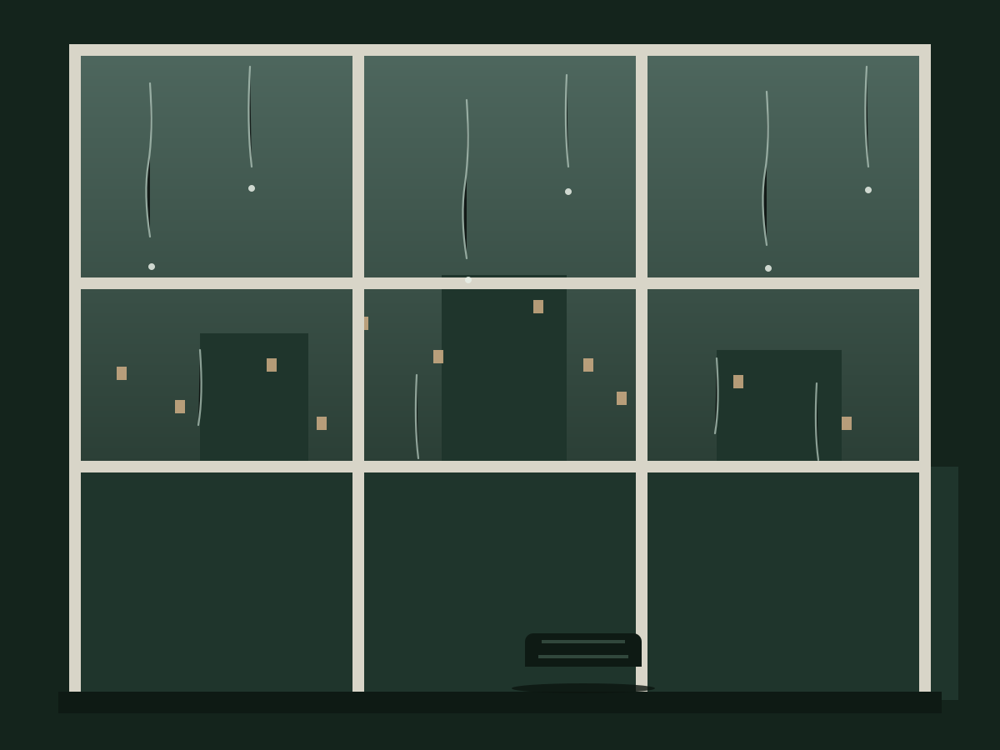

壹 · 惊蛰
雨季来袭
「惊蛰一过，春寒加剧。先是料料峭峭，继而雨季开始，时而淋淋漓漓，时而淅淅沥沥，天潮潮地湿湿……」
惊蛰的雷声还悬在天边，雨先到了。金门街到厦门街，整条长巷都泡在一种灰绿的水汽里，连呼吸都带着湿度。
这样的天气里，人反而醒了。雨把城市调成慢速，把窗玻璃变成一幅流动的画——你只需要一个屋檐，和一段愿意浪费的时间。
贰 · 瓦上
瓦上的音乐
「听听，那冷雨。看看，那冷雨。嗅嗅闻闻那冷雨，舔舔吧那冷雨。」
雨落在瓦上，是最古老的乐器。千片万片的黑瓦层层叠叠，雨来了，先是屋角的三两声清脆，继而千军万马，浩浩荡荡漫过整片屋脊。
那是一种全感官的邀请——听它的节奏，看它的银灰，闻泥土被敲醒的腥润。住在瓦屋下的人，等于睡在一场交响乐里。
02雨的切片 — 千片之瓦
叁 · 江南
杏花 · 春雨 · 江南
「杏花。春雨。江南。」
六个字，一块中文的原乡。只要在心里默念一遍，雨丝就会落在公元前的纸上，落在米芾父子的山水里。
对离开故土二十五年的人来说，杏花春雨不是风景，是身份。雨把海峡两岸淋成同一场雨——这也是乡愁最温柔的证据。
03雨的切片 — 文化原乡
肆 · 公寓
公寓时代
「前尘隔海。古屋不再。听听那冷雨。」
后来大家都搬进了公寓。水泥的平屋顶不留住雨，雨只能落在窗上、街上、空调的外壳上，敲不出从前的曲子。
瓦屋的时代过去了，听雨的人还在。隔着玻璃听雨，像隔着海峡听乡音——冷雨还是那场冷雨，只是听的人，把耳朵交还给了记忆。
04

雨的切片 — 隔窗听雨